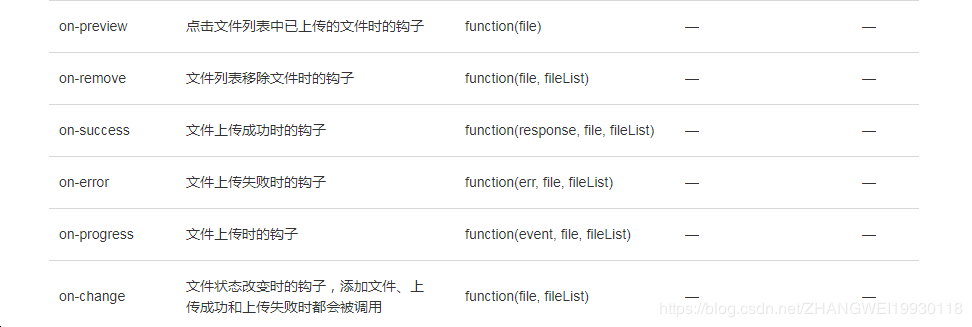

在使用element的上传组件时在一下几个钩子中传递其他参数

图中是文件上传时的几个钩子，参数为文件或文件列表或者其他参数，但是现在我想在原有参数上传递其他参数。比如我想在on-success的钩子中传递一个自定义参数i，原本是这样写的：
:on-success=”handleSuccess（i）” //handleSuccess是一个方法
但是发现这样写取不到自身原来的参数，后来在网上找到了一个比较好的方法，如下：
:on-success=”(value)=> handleSuccess(i, value)”1
这样就既可以获取到原有的参数又可以获取自定义传递的参数，下面是自己的使用方法：
<el-upload
class="upload-demo"
:action="GLOBAL.upFileUrl"
:data="uploadData"
:before-upload="fileSizeFiltering"
:on-success="(response, file, fileList)=>handleUpSuccess(response, file, fileList,i)"
:on-remove="(file, fileList)=>handleRemoveFile(file, fileList,i)"
:file-list="item.uploadFileList"
v-model="item.pushUpFileId"
:limit="5"
style="display: inline-block;">
<div class="addFile"></div>
</el-upload>同理默认参数是event的事件要传递其他事件也是这样
<ul>
<li v-for="item in list" @contextmenu="(e)=>showMenu(e,item.cd)" style="height:100px;">
{{item.na}}
</li>
</ul>